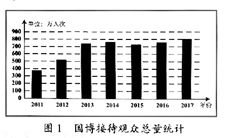
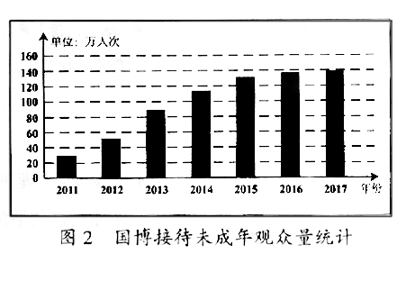

2018年北京市中考语文试题 · 现代文阅读 第15、17、18、19、20、21、22、23、24题
四、现代文阅读（共24分)
（一）阅读下面材料，完成15-17题。（共7分)
【材料一】
故宫博物院（简称“故宫”)成立于1925年，是中国最大的古代文化艺术博物馆，是中国文化遗产的守护者和传承者。截至2016年底，故宫文物藏品总数达186万余件。近年来，故官以丰富的馆藏资源为基础开展文化普及活动，成为公共教育的重要场所。展览是博物馆最基本的教育形式。为了使展览效果最优化，故宫在以往展览的基础上，
改变思路，不断创新，开创了文物藏品 ① 的新方式：展览不再是对文物进行简单摆放，而是通过文字、颜色、声音、图像等进行艺术再现；同时，通过图录制作、书籍编写、学术研讨、数字影像辅助导览等方式，让观众在观展时更好地了解展品的文化内涵。2016年，故宫成立教育中心，针对不同年龄、层次的观众，开展内容丰富、形式多样的体验活动，全面、立体地发挥故宫的公共教育功能。在公共教育中，故宫重视与教育机构合作，采用馆校合作方式开展选修课程和综合实践活动，让青少年在轻松活泼的参与中了解优秀的传统文化。
【材料二】


中国国家博物馆（简称“国博”)是一座全面系统展现中华优秀传统文化、革命文化和社会主义先进文化的综合性博物馆。馆中设有“古代中国”“复兴之路”两个基本陈列和10多个不同门类的专题展览，每年还有50余个临时展览，国博己经成为公共教育的重要平台。近年来，国博的展览吸引了国内外众多观众前来参观。2017年国博接待观众总量达806万人次，其中包括未成年观众139万人次。为了充分发挥国博的公共教育功能，自2012年5月起，国博设立了教育体验区。目前，围绕“历史与艺术并重”的主题，根据家庭、学校和社会不同群体开发了“阳光少年”“社会大课堂”“文化博览”三大系列课程，形成了以藏品为基础，以体验为重要方式的公共教育新模式。国博特别重视与学校合作，例如，为了使博物馆的馆藏资源和学校的教学内容相互补充，采用“双师教学”的模式，让学生对所学知识有全方位的认知。
【材料三】
中国科学技术馆（简称“科技馆”)是一座国家级综合性科技馆，是实施科教兴国战略、普及科学知识、提高公众科学素养的大型科技教育设施。科技馆以科学性和趣味性相结合的展览设计理念开展公共教育，吸引了众多的参观者。馆中展品涉及航空、航天、机械、交通、能源、信息科技、生物科技、纳米科技等众多领域。科技馆在利用展品进行展览教育的同时，还设置了科普活动室和实验室，配置了计算机、微型机床、3D打印机等近200套不同系列活动器材和40多套相关的实验仪器，设计了“飞行器的奥秘”“光影探秘”“生命科学俱乐部”等系列活动，让观众在亲身体验中，加深对科学的理解。 ② ，吸引了越来越多的参观者，尤其是青少年。2017年9月1日，科技馆正式启动“馆校结合基地校”项目，为首批200所中小学校提供场馆活动，为创新人才培养、校本课程开发、科技教师培训等提供服务。
15.依据上下文，在【材料一】和【材料三】横线处依次填入的语句，都正确的一项是（2分)
A.①展出和阐明 ②科普实践活动的这些内容
B.①阐释和展示 ②这些丰富的科普实践活动
C.①展示和阐释 ②这些丰富的科普实践活动
D.①阐明和展出 ②科普实践活动的这些内容
16，阅读【材料二】中的图1和图2，结合这则材料所说明的主要内容，你得出的结论是什么？（2分)
答：
17.依据上述三则材料，博物馆开展公共教育的主要方式可以概括为 、 、 （每空限8个字以内)（3分）
（二)阅读《信天游》，完成18-21题。（共10分)
信天游
刘成章
①信天游这个名字，如明月流水，如仙界的风，即使把它放到全世界数千年来所有的艺术品类之中，也数得上奇美浪漫。
②透过渺远和苍凉，是一眼望不尽的峁①梁连绵，沟壑纵横。这边山头犁铧②翻着土浪，羊肚子手巾扎在头上，扶犁者汗湿衣褂；那边沟里扁担一闪一闪，小脚片踩出花似的踪迹，挑水者是个十三四岁的小女女。扶犁汉子也许觉得今天特别口渴，便朝沟里喊去：“哎——风儿！晌午送饭，别忘了给我多舀半罐子米汤！哎——洋芋丝丝也拿上一点！”小女女便转脸应声：“哎——舅舅！我听下啦！”他们必须扯长声儿，不然，对方就难以听清。而他们觉得需要排遣寂寞无聊的时候，便以更高亢、更悠扬的嗓音唱了——这就是与中原文化迥异的信天游了。祖祖辈辈，年年岁岁，信天游唱在放羊的山坡上，唱在赶脚的大路上，唱在锄地的五谷间——处处都是宏阔的舞台，声声都如云霞之辞。
③小时候的我被母亲牵着稚嫩的手，走在延河畔上。突然，好像从那云缝中，猛乍乍淌出一股飘逸的光，瑰丽迷人。那是我平生所听见的第一支信天游：
你妈妈打你你给哥哥说，
为什么你要把洋烟喝？
我妈妈打我我不成材，
露水地里穿红鞋。
这样土气，这样简单，却这样富于艺术魅力的两句信天游，一经入耳，便入骨，便入髓，我此生便再怎么也忘不了了。
④上初中后，因为爱上了文学，我被信天游迷得死去活来。我买了一本何其芳、张松如二人主编的《陕北民歌选》，又念歌词又唱曲谱。书上那“上畔畔的葫芦”，那“清水水玻璃”，那“双扇扇门来单扇扇开”，虽然都是我熟悉的事物，但还是给我开启了一个诗意的世界，令我神往。
⑤有一天我登上了一个山顶，突有一支嗓音浑厚的信天游响在我的耳畔。我看见，唱歌的是个放羊老汉。他唱得实在太美了，但我写作文时竟不知该如何描述。我那时候望着那苍茫辽阅、连绵起伏的黄土高原，听着这支信天游，实在分不清信天游是脱胎于它，还是它有几分信天游的影子？后来我曾经暗暗地想，假使信天游可以像天下万物似的有形有色，而且其形色永不糟朽，那么，整个陕北高原的天空，一代代的累积，它每寸蓝天每寸云彩都会缀满音符和文字的晶亮钻石。
⑥1956年，我还是个高一学生。在延安举行的五省（区)青年造林大会上，我见到了31岁的诗人贺敬之。之后不久，一首信天游形式的作品横空出世，那就是他的《回延安》。它让我爱不释手。诗中经典名句“几回回梦里回延安，双手搂定宝塔山”，既有信天游的质朴语言和韵味，又充溢着李白一样的浪漫诗思。
⑦我是一路苦恋着信天游走进中年时代的。不知不觉间，我收集购买的信天游和陕北民歌，以及与之相近的爬山歌、山西民歌的资料和书籍，无法尽数。把它们堆在一起，竟有十几斤重了。忽有一日，省上组织了个创作班子，拿着初步改端下的五首陕北革命民歌来到延安，一边修改一边征求意见。好像是一个上午吧，我们延安文工团创作组一行数人，被召去开会。经过初步改编的陕北民歌，如久埋土中的明珠出土、如重开的牡丹，闪耀在人们面前。为了新写一首中央红军初来陕北的歌子，我在带来的那堆书里翻找，找见了让人眼睛为之一亮的两句：“山丹丹开花红满了山，中央来了大发展。”我好不高兴！天色入暮，我把它交给我团的老作曲家航海。不久之后，一首深受人们喜爱的信天游歌曲《山丹丹开花红艳艳》，与其他几首民歌一起，震响在全国的广播喇叭之中。
⑧我自己当然也写过信天游歌曲。那一年，我以上下两句原生态的信天游为动机，与作曲家王建民合作，创作了一首完全是信天游味道的歌曲，里面每节都有“圪③梁粱”三字回旋萦绕，便名之为《圪梁梁》。我还与他合作过一首以信天游为基调的女声独唱《崖畔上酸枣红艳艳》。当陕北的山水间飘荡着这两首歌的时候，我整个身心便油然生出一种归属感。
⑨大约在十多年之前，我曾忧心，那曾经像野草一样一个劲地往出钻的信天游歌手，在陕北这片可爱的黄土地上，怎么忽然间变得稀缺超来了！可幸好是我的感觉有些偏差。完全在不经意间，我终于发现信天游歌手就像春雨过后的山丹丹，开得好红好红，这山是，那山也是。更让我欣喜的是，那一年回延安，一下火车，便有小青年们一边出车站，一边放开嗓门，高唱着一声声的信天游。他们大概一看见宝塔山，嗓子就痒痒了。他们对着延安群山环抱着的空旷夜空，就像虎归深山鱼归海，便任情任性起来。
⑩啊，陕北，生我养我的这片厚土啊，我愿像这信天游一样地高高飞起，化作装饰你的夜空的月晕，绕着月亮转 。
（有删改)
注：①[峁（mǎo)]我国西北地区称顶部浑圆、斜坡较陡的黄土小丘。②[犁铧（huá)]翻地的农具。③[圪]念gē。
18.阅读第①段，你想到的问题是什么？请把这个问题写出来，并结合这段的内容简要说明产生问题的原因。（2分)
问题：
原因：
19.阅读第③-⑨段，将这部分文字中体现作者情感脉络的关键语句摘抄下来。（2分)
答：
20.简要分析第②段画线语句是如何用形象的语言写出信天游特点的。（3分)
答：
21.根据作者所表达的情感，从下面三个短语中选择一个填入文章结尾的横线处，最恰当的一项是（3分)
【甲】红圈圈 【乙】一圈红 【丙】圈圈红
（三)阅读下面的文字，完成22-24题。（共7分)
①读书是一个人成长的重要途径。读书的方法多种多样，但循序渐进是最基本的方法。
②任何事物的发展都是一个渐进的过程，都是从无到有，从小到大，逐步完善的。读书也一样，必须由少到多，由浅入深，逐步理解、消化、吸收。“万丈高楼平地起”，大楼要一层一层往上盖，书也要一点一点认真读。正如清代陆清献在《示儿书》中所说：“一日所读虽不多，日积月累，自然充足。”读书如果违背了循序渐进的规律。急于求成，就好像肚子饿时吃饭，狼吞虎咽，囫囵吞枣，不仅没能品尝到菜肴的滋味，甚至可能会因噎废食。数学家华罗庚也说：“学习上切忌好高骛远，急于求成。学得不扎实，你想来得快些，结果反倒慢了。”可见，循序渐进是一种符合事物发展规律的读书方法。
③任何学科的知识体系都是由浅入深建立起来的，起点都是基础知识。循序渐进的读书方法是与学科知识体系的特点相适应的，因此，读书就要从基础知识开始。杰出的科学家都是从最简单的加减乘除开始学起，杰出的画家都是从最简单的线条和色彩开始练起，杰出的文学家也都是从最简单的遣词造句开始写起。他们都是在起点就打下了坚实的基础，才会不断提高，有了后来的成就。这充分说明打好基础，循序渐进，才会取得好的结果。
④在循序渐进的阅读中，随着对内容理解的不断加深，人们会产生更深入的思考，因而循序渐进的阅读就成为读书者进步的阶梯。南宋哲学家朱熹曾说“读书之法，在循序而渐进，熟读而精思”，这是他对自己续书经验的总结。他曾每日从《礼记》《左传》等经籍中选取两段，反复阅读，出口成诵，进而不断思考，融会贯通，最终形成自己的思想。正是这样，他才成为伟大的哲学家。
⑤青年人读书欲望很强，读书劲头很大，这是可喜的现象。但有些人读书贪多求快，“在空中起跳”，忽视打好扎实的基础，违背了循序渐进的规律，结果收效甚微。因此，一个人只有掌握了正确的读书方法，才能日益精进。
22.上面的文字告诉我们的一个道理是 。（限12个字以内)（2分)
23.阅读全文，判断下列说法，不正确的一项是（2分)
【甲】第②段分别引用陆清献和华罗庚的话，来充分论证本段的观点。
【乙】第③段论述的重点是：任何学科知识体系的起点都是基础知识。
【丙】第④段先说内容理解的加深会带来思考的深入，据此提出观点，再用朱熹的言行做证明。
24.下面是《论语》中关于学习的两则语录，哪一则有助于你理解上面的文字？请简要说明理由。（3分)
①子曰：“温故而知新，可以为师矣。”
②子曰：“学而不思则罔，思而不学则殆。”
答：